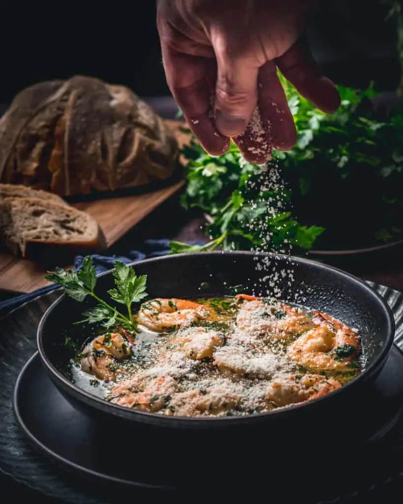

Scampi

The best homemade shrimp scampi
The key to the best homemade shrimp scampi recipe is the Parmesan garlic
white wine butter sauce! Shrimp Scampi is an easy dinner to make and
perfect with pasta or just by itself with some good homemade bread!
Ingredients
- Shrimp
- Dry White Wine
- Unsalted Butter
- Extra Virgin Olive Oil
- Garlic
- Red Pepper flakes
- Salt & Pepper
- Parsley
- Lemon
- Parmesan Cheese
Steps
-
Heat olive oil and 2 tablespoons of butter in a large pan or skillet.
Add garlic and sauté until fragrant (about 30 seconds - 1 minute). Then
add the shrimp, season with salt and pepper to taste and sauté for 1-2
minutes on one side (until just beginning to turn pink), then flip.
-
Pour in wine (or broth), add red pepper flakes (if using). Bring to a
simmer for 1-2 minutes or until wine reduces by about half and the
shrimp is cooked through (don't over cook your shrimp).
-
Stir in the remaining butter, lemon juice and parsley and take off heat
immediately.
-
Serve over rice, pasta, garlic bread or steamed vegetables (cauliflower,
broccoli, zucchini noodles).